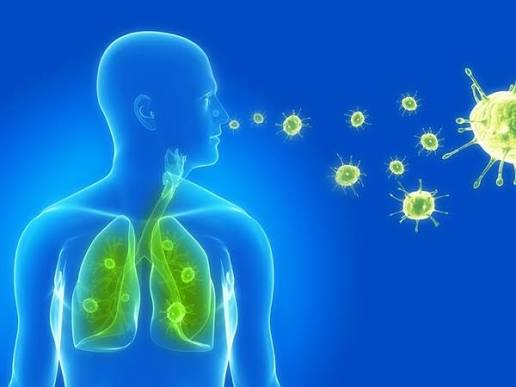

โรคติดต่อ
โรคติดต่อเป็นโรคที่สามารถแพร่จากบุคคลหนึ่งไปยังอีกบุคคลหนึ่ง หรือแพร่ผ่านสิ่งแวดล้อมและพาหะบางชนิดได้ โรคติดต่อมีหลายรูปแบบและสามารถแพร่กระจายผ่านช่องทางที่แตกต่างกัน เช่น การสัมผัส การไอหรือจาม อาหารและน้ำที่ปนเปื้อน หรือแมลงและสัตว์บางชนิดเป็นพาหะ ตัวอย่างโรคติดต่อที่พบได้ ได้แก่ โรคไข้หวัด โรคไข้เลือดออก โรคมือ เท้า ปาก และโรคติดเชื้อทางเดินหายใจ การแพร่กระจายของโรคอาจเกิดขึ้นได้ง่ายในสถานที่ที่มีคนอยู่รวมกันเป็นจำนวนมาก เช่น โรงเรียน ห้องเรียน หรือระบบขนส่งสาธารณะ ดังนั้นการมีความรู้เกี่ยวกับการป้องกันโรคจึงเป็นสิ่งสำคัญ การป้องกันโรคติดต่อสามารถทำได้โดยรักษาสุขอนามัยส่วนบุคคล ล้างมืออย่างถูกวิธีและสม่ำเสมอ รับประทานอาหารและดื่มน้ำที่สะอาด ไม่ใช้ของใช้ส่วนตัวร่วมกับผู้อื่น และปฏิบัติตามคำแนะนำด้านสุขภาพเมื่อเกิดการระบาดของโรค นอกจากนี้ควรดูแลร่างกายให้แข็งแรงด้วยการรับประทานอาหารที่มีประโยชน์ ออกกำลังกาย และพักผ่อนให้เพียงพอ เพื่อช่วยส่งเสริมสุขภาพโดยรวม